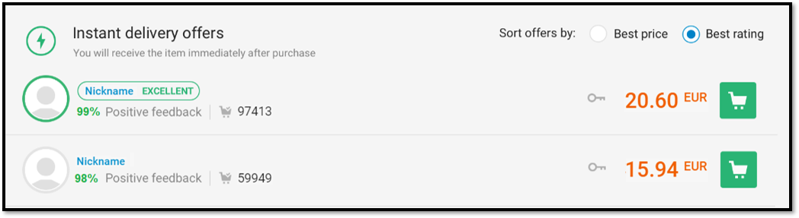

𝙂𝙪𝙞𝙙𝙚 𝙊𝙣 𝘽𝙚𝙨𝙩 𝙂𝙖𝙢𝙚𝙨 𝙖𝙣𝙙 𝙒𝙝𝙚𝙧𝙚 ğ™ğ™¤ 𝘽𝙪𝙮 𝙏𝙝𝙚𝙢
Welcome to
Game Distribution Apps
There are many places to get games and the main places are game distribution apps such as: Steam, Origin,, Blizzard.net, and ,. At the moment, Steam is the most popular service and has the most games. When you buy a game from these servers, unlike on console platforms, there is always a sale on and the games are mostly cheap. Steam has a big sale on every day! When you buy games you will want to have these services downloaded on your computer so you will be able to download these games. However, many gamers have been annoyed that they have not been able to download the games they want from one place and they have to have many launchers and services. For instance, if I wanted to play Apex Legends, Rust and Modern Warfare then I would need to open up three different and seperate launchers. This problem has now been fixed. You can now save non-steam games into the steam launcher and you can download an application called GOG Galaxy which lets you have every single game in one place, including your console games! You can lauch them all from GOG Galaxy.
Grey Market
The grey market of games allows you to buy games very VERY cheap. You can also buy software from these places such as: antivirus and Microsoft Office. However, many people believe that it is not an ethical way to buy video games and there are many scams that take place on these grey market sites. This is why they are called "grey" market because some of the things people do with these sites are illegal but thes site in themselves are not illegal. They are the Ebays of video games. Apart from all of this grey markets are a great place to get really cheap video games if you know what you are doing. There are two main grey market sites to buy games and software from: G2A and Kinguin. Here there are many AAA games for as low as £0.50! When you are buying a game you do need to keep in mind that there are people out to scam you. Always check the rating of the seller and how much positive feedback they have that you are buying from and if they are lower than 80% I would not buy from them./

Also check the comments of the seller because you may find something suspicious. There have been many cases on many sites, not just grey markets, that have shown people use fake bots to make their reviews seem better. Dont let all of this put you off buying from grey markets! They are still a great place to buy games and software
Here is a video on grey markets:
The Best PC Games

There are many games genres, FPS Games being the most popular, and there are many great games availible on PC. Here is a list:
CS:GO (Availible on Steam)
Half Life 2 (Availible on Steam)
Battlefield V (Availible on Origin)
Minecraft Windows 10( Availible on Microsoft Store)
Destiny 2 (Availible on Steam)
Starcraft 2 (Availible on Blizzard.net)
Overwatch (Availible on Blizzard.net)
Be sure to check out these games!
Game Genres
Here are some of the main game genres
| Genre | What it is | Example |
|---|---|---|
| First Person Shooter (FPS) | A realistic shooter that is first person perspective | Titanfall 2 |
| Role Playing Game (RPG) | A game where you control a character and act out the life of this character whithin a narritive | Undertale |
| Multiplayer Online Battle Arena (MOBA) | A strategy game where you control a character on a map of isometric perspective | Heoros of The Storm |